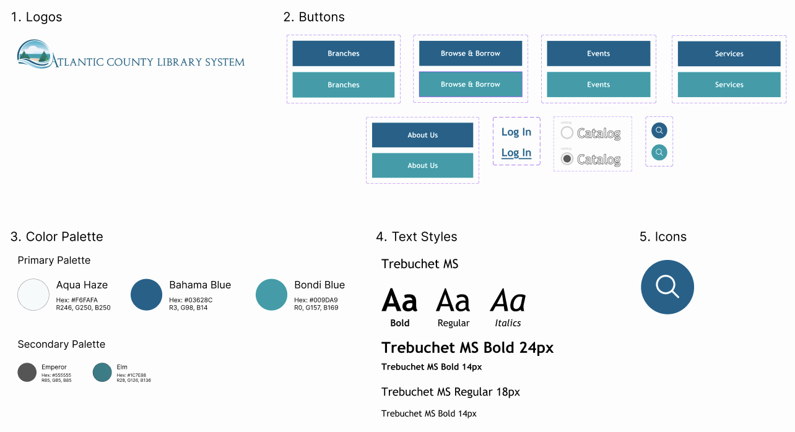
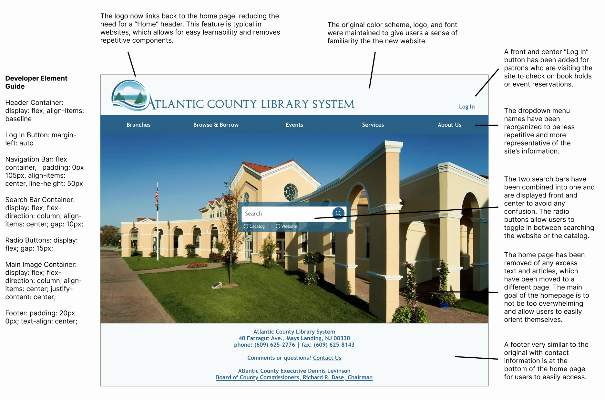

Rethinking the county library system
Identifying and fixing problems with website usability and learnability
Growing up in Atlantic County, I visited
this website
weekly to check for book availability and local events, but I often struggled to naviagte it and often left the site frustrated. Some of the main issues I noticed are detailed below.
Website Efficiency
The two search bars are initally hard to see and can be confused with each other. It's hard to understand the goal of the website: searching the book catalog and finding local events.
There is a lot of information initially presented on the screen, which can be overwhelming for users and can distract users finding what they need.
There are repetitive elements, like text and the multiple “Upcoming Events” sections.
Website Learnability
Again, the amount of text and components the user is presentend with can make it hard for them to digest the information, making the website hard to learn.
Personally, I visted the website many times before I realized there is a search bar available to browse the website. This is becuase it is hidden away at the bottom of the screen.
Website Memorability
The website is not memorable at all. The color scheme, while nice, is pretty neutral. There is nothing setting this site apart.
Website's Conceptual Model
Overall, the amount of information is very overwhelming, which makes it difficult for users to understand the conceptual model of the website.
The lack of clear hierarchy and organization of information makes it difficult for users to understand how to navigate the site.
Main Issues with Website Accessibility
WAVE Web Accessibility Evaluation Tools found 21 errors, 75 alerts, and 8 contrast errors with the site
Most alerts were about empty links, redundant titles and text, and many images and titles missing alternative text.
Taking these issues into account, I started redesigning the library website starting with a...
Visual Design Style Guide
This visual design style guide displays the main colors, typography, and reusable components’ different states (buttons on hover, click, etc.). The clear documentation shows the consistency of the design work and makes handoffs to other members on a team easier.

To see these components and new ideas in action, I next created three (Large Computer, Tablet, and Phone) figma mockups on what the site will look like. These mockups are annotated with the new changes I made and how developers would go about recreating these design choices.
Large Computer

As the screen size decreases, the searchbar component becomes focal point of page.
After recieving positive feedback from my peers, I created a website of my design, which is pictured below and can be accessed by clicking on the photos. The website is very responsive and can be seen in three different screen sizes.
Large Computer Redesign